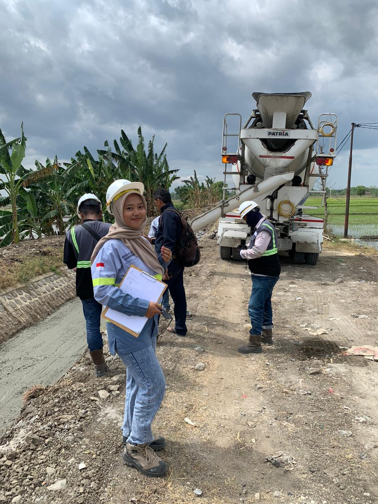
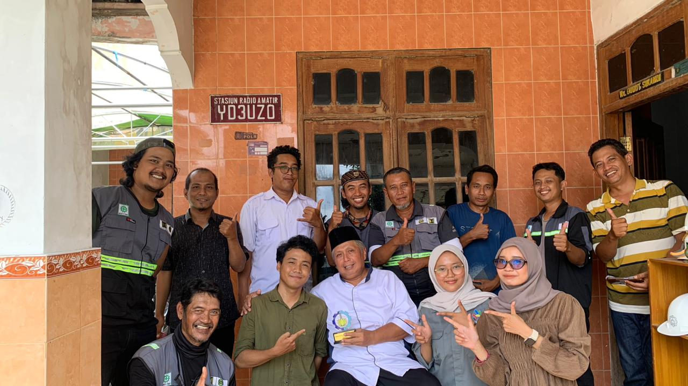
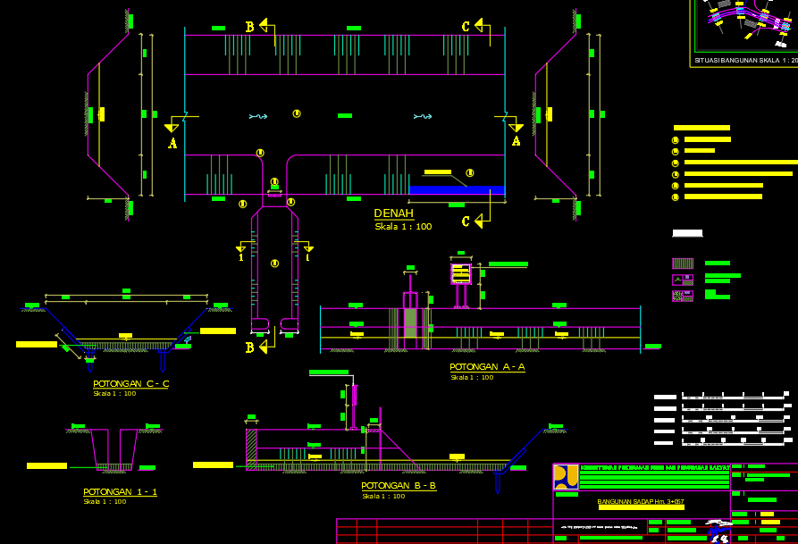

Fresh Graduate Teknologi Rekayasa Konstruksi Bangunan Air
Institut Teknologi Sepuluh Nopember
IPK: 3,34 / 4,00
Memiliki ketertarikan luas pada dunia konstruksi dan teknik sipil, baik dalam bidang bangunan air maupun konstruksi bangunan. Memiliki pemahaman mengenai perencanaan, perhitungan, gambar teknik, serta proses pekerjaan konstruksi dari tahap perencanaan hingga pelaksanaan di lapangan.
Memiliki pengalaman praktik dan magang dalam pekerjaan yang berkaitan dengan irigasi, drainase, infrastruktur sumber daya air, pengolahan data teknis, serta penyusunan dan pembetulan gambar teknik. Selain itu, memiliki kemampuan dasar dalam memahami dan merencanakan konstruksi rumah dan bangunan sederhana.
Pribadi yang teliti, bertanggung jawab, mudah beradaptasi, mau belajar hal baru, dan siap bekerja di lapangan maupun di lingkungan kantor. Berkomitmen untuk terus mengembangkan kemampuan dan memberikan kontribusi terbaik dalam setiap pekerjaan dan proyek yang dikerjakan.
Download CV
Berikut merupakan rangkaian pengalaman akademik dan praktik lapangan yang telah dilakukan, yang berfokus pada perencanaan, analisis, serta evaluasi infrastruktur sumber daya air.
PT. Daya Cipta Dianrancana | Konsultan  Monitoring Lapangan  Team Konsultan  Revisi GambarInternship Experience
BBWS Bengawan Solo
Email: nadiyata23@gmail.com
WhatsApp: 081252146034
LinkedIn: linkedin.com/in/Nadiya-El-Safira